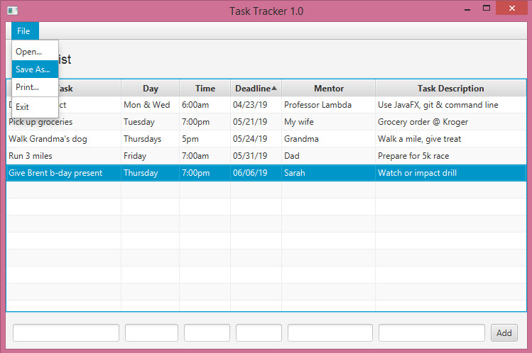

Who Has Time for That?
"How do you stay so organized?" Your friend Richard asks. You answer: "I created my to do list app." Richard laughs. "Who has time to make a to do list app?"
Done Completely in Code
I learned a good deal doing this project due to the fact that I made this application using code only. In order to better understand the JavaFX code, I studied dozens of tutorials on JavaFX and as well as a one of Oracle's detailed books on Java. That made it possible for me to actually think up my own project and write the code. I custom designed this very simple to do list app with SMART goals in mind. I called the application Task Tracker 1.0 (You can see this title at the top of the window pane). In the rest of this page, I have included images and explanations of how Task Tracker 1.0 works. The entire code is included in a scrolling text box as well.
Visual Layout
I used the NetBeans IDE 8.2 to run and test Task Tracker 1.0. I named the public class JavaFXDoGood. JavaFXDoGood starts with 22 imports to access libraries and uses a primary stage that contains one scene. Within the scene, the VBox component contains the other layout components including a menu bar, a label, a table with six columns, and a horizontal row at the bottom. The horizontal row contains six text fields, and an add button. When JavaFXDoGood is run, the stage looks like this:
Editable Table
While the two example tasks are helpful in modeling how you could detail your tasks, the user will want to erase or change them. With a double-click, the text can be edited or erased. In order to keep the text you enter, you must press enter. This feature was added by calling the setEditable() control.
Add Rows
To add a task, simply enter the desired text in the text field boxes at the bottom and press the "Add" button. In order for the table to accept the text, each column uses setters and getters along with an action event and an event handler to access the information from the text fields.
File Menu
The menu bar has a file menu, which includes (as is seen below) the ability to access the open, save as, and print dialogue windows. This functionality is enabled by the fileChooser class, which is called in an EventHandler for each action.
Open and Save As
In order for the open and save as dialogue windows to open, I added getters in a private class for both open and save as.
Code for the To Do List
The project JavaFXDoGood (below), includes comments that explain what each block of code does. These comments come after double forward-slashes. //